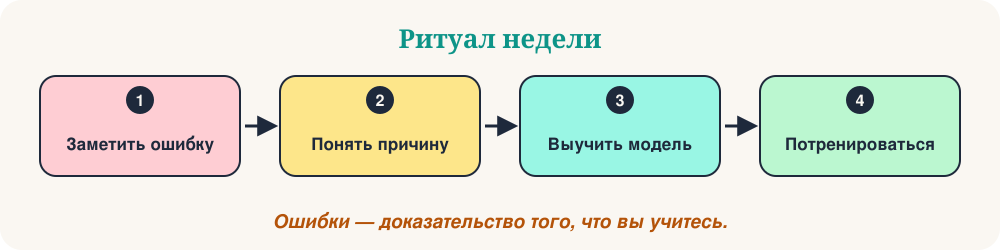

Добро пожаловать в «Субботние ошибки». Каждую неделю мы разбираем пять небольших ошибок, которые делают изучающие язык, понимаем, почему они случаются, и заменяем их естественной моделью. Ошибки — не проблема. Это доказательство того, что вы учитесь.
На этой неделе — пять частых ошибок в русском языке. Каждая ошибка проходит одни и те же шаги: не совсем верное предложение, правильное предложение, причина, простое правило и мини-тест. Замечайте модель, а не только отдельное предложение.

Пять ошибок сегодня
- Глагол «быть» в настоящем времени
- Предложный падеж: где?
- «Нет» + родительный падеж
- Меня зовут…
- Вид глагола: читал или прочитал?
Глагол «быть» в настоящем времени
«Я есть студент.»
«Я студент.»
Почему так бывает. В русском языке в настоящем времени обычно нет глагола «быть»: «я студент», «она дома».
Правило COSY. Для описания говорим без «есть»: Я студент. Она врач. Мы дома. «Есть» нужен, когда говорим о наличии: У меня есть брат.
- Он врач.
- Мы дома.
- У меня есть брат.
❓ Как правильно?
В настоящем времени «есть» не нужен: Я студентка.
Предложный падеж: где?
«Я живу в Москва.»
«Я живу в Москве.»
Почему так бывает. После предлогов «в» и «на» (когда отвечаем на вопрос «где?») слово меняет окончание.
Правило COSY. Где? → предложный падеж: в Москве, в школе, на работе, в Италии.
- Мы живём в Париже.
- Книга на столе.
- Она в школе.
❓ Мы живём в ___.
Вопрос «где?» — предложный падеж: в Москве.
«Нет» + родительный падеж
«У меня нет брат.»
«У меня нет брата.»
Почему так бывает. Слово «нет» требует родительного падежа.
Правило COSY. нет + родительный падеж: нет брата, нет времени, нет воды.
- У меня нет времени.
- В доме нет воды.
- Здесь нет магазина.
❓ У неё нет ___.
После «нет» — родительный падеж: нет сестры.
Меня зовут…
«Я зовут Анна.»
«Меня зовут Анна.»
Почему так бывает. По-русски мы говорим «меня зовут», а не «я зовут». Здесь нет подлежащего «я».
Правило COSY. Меня зовут + имя. Как тебя зовут? Как вас зовут? Его зовут Иван.
- Меня зовут Анна.
- Как тебя зовут?
- Его зовут Иван.
❓ Как правильно?
Правильная модель: Меня зовут Ольга.
Вид глагола: читал или прочитал?
«Я каждый день прочитал газету.»
«Я каждый день читал газету.»
Почему так бывает. Слова «каждый день», «часто», «обычно» говорят о повторяющемся действии. Для него нужен несовершенный вид.
Правило COSY. Повтор или процесс → читал (несовершенный вид). Результат, один раз → прочитал (совершенный вид).
- Вчера я читал газету весь вечер.
- Вчера я прочитал газету.
- Раньше я каждый день писал письма.
❓ Вчера я ___ эту книгу и теперь знаю конец.
Результат достигнут (знаю конец): прочитал.
Ваша практика на 10 минут
- Выберите две ошибки, которые вы иногда делаете.
- Напишите по три новых предложения для каждой, используя правило.
- Произнесите их вслух и запишите себя.
- Сравните свои предложения с примерами выше.
- На следующей неделе слушайте те же модели в настоящих разговорах.
Главное
Замечайте модель. Тренируйте модель. Сделайте её своей. Какой ответ удивил вас больше всего? Запишите его и используйте в предложении сегодня.
“Ошибки — часть обучения.”